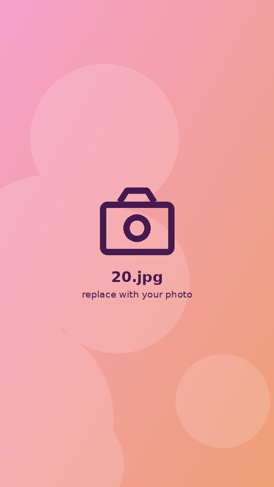
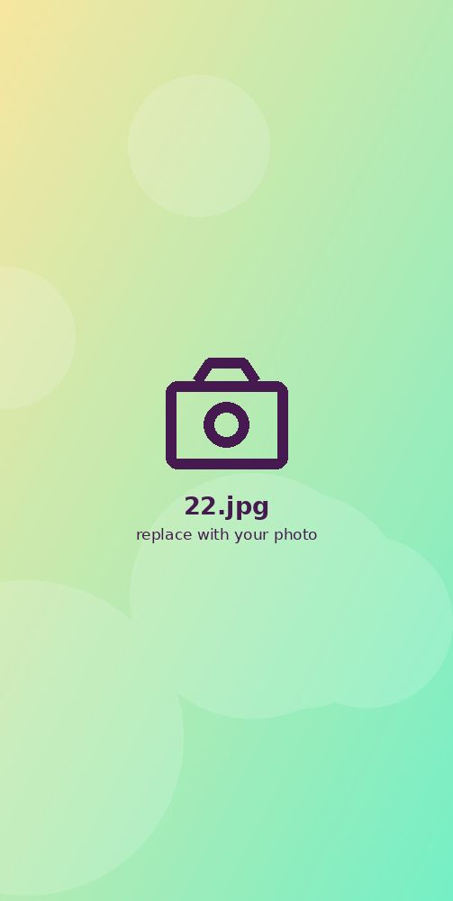
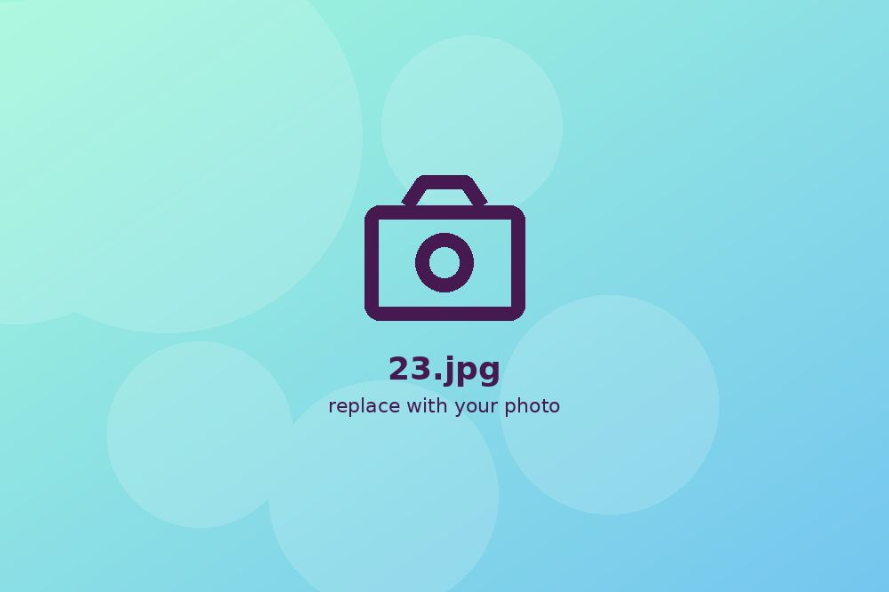

Chapter I: a memory preserved
The early magic
Looking back at the moments that started it all. A day filled with innocent joy, pure smiles, and the beginning of a beautiful journey.
Chapter II: growing up
Sweet memories
Candles blown, wishes made, and surrounded by the people who matter most. Every year adding a little more brilliance to your story.

Chapter III: finding yourself
A beautiful era
Stepping into your own. A birthday marked by unforgettable laughter, bolder dreams, and the undeniable glow of confidence.

The latest milestone
Just yesterday
The culmination of all the years before it. A celebration of who you are right now, standing on the edge of greatness.